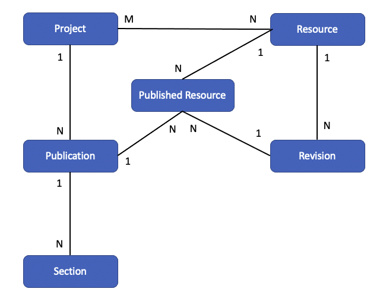

Publication Model
View SourceOverview
Torus employs a publication model that is designed to support:
- The ability to allow forward development for an author without interferring with student and instructor visible content
- The ability to track changes across revisions of a project resource
- The ability to migrate changes for resources across different projects
- The ability to allow instructors to preview and opt-in to using newly published content
Data Model
The primary components and their relationships are as follows:

A Resource in a course project can be a page (graded or ungraded),
container (e.g. Unit, Module), an activity, or learning objective. A course
project consists of a collection of resources. This relationship is
a many-to-many relationship to allow multiple course projects to share
the same resource. That is a key aspect of Torus design to allow families
of related course projects to exist in which content and changes of a
shared resource can migrate from course to course within the course project
family.
Changes in the content of any particular resource, over time, are modeled as a collection of Revisions, hence the one-to-many relationship from Resource to Revision.
A course project has a series of Publications. A publication is
either published (meaning it is available and visible to instructors to use)
or it is unpublished. Course Sections that an instructor teaches reference
exactly one Publication for the course projects that the section is using.
Finally, at the heart of the publication model, the Published Resource exists to tie together a specific revision for every resource in a course for a specific publication.
Example Data
As an example of this publication model, consider the following table of
Published Resource records, all from one course project that consists
of two resources identified by R1 and R2 that have revision records identified by V1 and V2, respectively. Initially the course has one publication identified by P1 so the published resource records look like:
| Publication | Resource | Revision |
|---|---|---|
| P1 | R1 | V1 |
| P1 | R2 | V2 |
The course author makes a change to the R2 resource and publishes that
change as a second publication P2. Now the published resource records
look like:
| Publication | Resource | Revision |
|---|---|---|
| P1 | R1 | V1 |
| P1 | R2 | V2 |
| P2 | R1 | V1 |
| P2 | R2 | V3 |
In the above, we see how the original publication is preserved - so any
course sections teaching it will have their content unaffected by the new
publication. Any course section that opts-in to using the P2 publication
will see the update to the R2 resource.